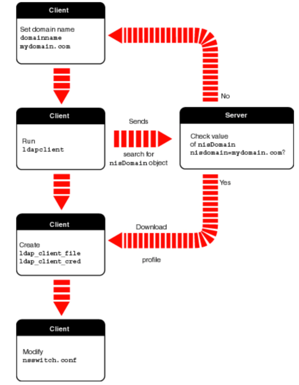
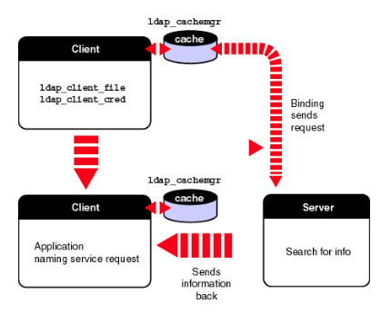
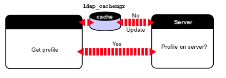

Dans cette section, il est question de configurer le système Solaris de Sun installé sur la machine sunray1v440 (voir figure 2.1).
Sous Solaris 8 les fichiers /var/ldap/ldap_client_file et ldap_client_cred sont utilisés pour configurer le client LDAP. Ces deux fichiers ne doivent pas être modifiés manuellement mais par l’intermédiaire de la commande ldapclient. En effet, Sun ne garantit pas que le contenu de ces fichiers soit toujours humainement compréhensible.
Le fichier ldap_client_file contient la configurations du client tandis que fichier ldap_client_cred contient des informations dont le client se sert pour se connecter au serveur. Les paramètres les plus importants de ces fichiers sont repris aux tableaux 2.6 et 2.7.
| attribut | description |
|---|---|
| NS_LDAP_FILE_VERSION | Numéro de version du fichier de configuration. |
| NS_LDAP_SERVERS | Adresse IP et numéro de port du serveur LDAP à contacter. |
| NS_LDAP_SEARCH_BASEDN | Noeud de base par défaut à partir duquel le client effectue ses recherches dans l’an- nuaire. |
| NS_LDAP_SERVICE_SEARCH_DESC | Redéfinit le DN de base pour un service particulier. |
| NS_LDAP_CREDENTIAL_LEVEL | Niveau d’identification que le client utilise pour se connecter au serveur (anonymous ou proxy). |
| NS_LDAP_AUTH | Définit la méthode d’authentification par défaut du client : aucune, simple ou sécurisée (SSL/TLS, SASL...). |
| NS_LDAP_SERVICE_AUTH_METHODE | Redéfinit la méthode d’authentification pour un service. |
| NS_LDAP_CACHETTL | Spécifie la durée de validité du cache client. |
Tab. 2.6 – Attributs du fichier ldap_client_file
| attribut | description |
|---|---|
| NS_LDAP_BINDDN | DN utilisé par le client pour s’identifier sur le serveur. |
| NS_LDAP_BINDPASSWD | Mot de passe utilisé lors de la connexion. |
Tab. 2.7 – Attributs du fichier ldap_client_cred
Avant de pouvoir configurer le client Solaris 8, il faut effectuer quelques manipulations sur le serveur OpenLDAP. En effet, le client Solaris utilise des classes d’objet qui ne sont pas fournies pas défaut avec le serveur OpenLDAP. Ainsi, pour être en mesure de répondre aux requêtes du client Solaris, le schéma de l’annuaire doit être étendu en installant les fichiers solaris.schema et DUAConfSchemaOID.schema sur le serveur.
Le premier fichier (solaris.schema) contient les définitions de classes utilisées pour enregistrer le profile du client Solaris (voir Initialisation avec profile) dans l’annuaire. Quant au fichier DUAConfSchemaOID.schema, il définit la classe DUAConfigProfile utilisée pour stocker le profile d’un utilisateur particulier : le Directory User Agent (DUA). Ce dernier fait partie des composants d’un annuaire définit par la nome X.500. Concrètement, le DUA représente l’application cliente qui communique avec le serveur et accède à l’annuaire.
En plus de nouvelles classes, l’annuaire doit avoir une structure adaptée au client Solaris. Pour cela, l’entrée racine de l’annuaire doit être un objet de type nisDomainObject (définit dans le schéma solaris.schema). Cette classe définit l’attribut nisDomain. Ce dernier est un concept propre au protocole NIS9 (Network Information Service) mais est encore utilisé par le client LDAP de Solaris pour vérifier le context de nommage du serveur lors de l’initialisation du système et du rafraîchissement du profile du client.
Enfin, le DIT est modifié afin de créer de nouvelles branches dans l’arborescence de l’annuaire. En effet, le client Solaris attend une certain organisation de l’annuaire. Ces nouvelles branches ou conteneurs sont destinés à recevoir différents types d’informations comme les profiles clients, les comptes utilisateurs, les groupes, etc. Les différentes étapes pour adapter le serveur sont reprises ci-dessous.
Ajouter les schémas solaris.schema et DUAConfSchemaOID.schema (repris en annexe) dans le répertoire contenant les fichiers de schémas du serveur (/user/internet/openldap/etc/schema/).
Modifier le fichier slapd.conf pour inclure les nouveaux schémas.
include /usr/internet/openldap/etc/schema/solaris.schema
include /usr/internet/openldap/etc/schema/DUAConfSchemaOID.schema
Remplacer l’entrée racine de l’annuaire par une entrée nisDomainObject
ldapdelete -D cn=root,dc=inpres,dc=be -x -W ou=accounts,dc=inpres,dc=be
ldapdelete -D cn=root,dc=inpres,dc=be -x -W ou=groups,dc=inpres,dc=be
ldapdelete -D cn=root,dc=inpres,dc=be -x -W dc=inpres,dc=be
ldapadd -x -W -D cn=root,dc=inpres,dc=be -f baseDIT.LDIF
La commande ldapadd va se connecter en tant qu’administrateur et ajouter l’entrée contenue dans le fichier baseDN.LDIF.
Créer l’arborescence de l’annuaire spécifique au client Solaris
ldapadd -x -W -D cn=root,dc=inpres,dc=be -f DITSolaris.LDIF
Le fichier DITSolaris.LDIF (en annexes) contient les entrées attendues par le client Solaris.
La commande ldapclient est utilisée pour configurer le client LDAP, afficher la confi- guration actuelle et restaurer l’environnement réseau du client LDAP. Sous Solaris, il existe deux manières de configurer le client avec ldapclient :
Pour faciliter la configuration du client Solaris, il est possible de définir un profile client stocké dans l’annuaire LDAP. Lors de l’initialisation du client, le profile est chargé depuis l’annuaire et utilisé pour initialiser les fichiers de configuration (ldap_client_file et ldap_client_cred).
L’avantage de travailler avec un profile est de pouvoir modifier dynamiquement la configuration de tous les clients utilisant le même profile. Pour cela, le démon ldap_cachemgr doit être lancé sur les clients. En effet, c’est lui qui est chargé de mettre en cache le profile du client. Avant de pourvoir configurer le client avec un profile, il faut le créer à l’aide de la commande ldap_gen_profile.
ldap_gen_profile -b dc=inpres,dc=be -a none -c anonymous 10.59.4.8 > default
cat default
dn: cn=default,ou=profile,dc=inpres,dc=be
ObjectClass: top
ObjectClass: DUAConfigProfile
defaultServerList: 10.59.4.8
defaultSearchBase: dc=inpres,dc=be
authenticationMethod: none
cn: default
credentialLevel: anonymous
Une fois créé, le profile doit être placé dans le conteneur (branche ou=profile) destiné aux profiles créés au paragraphe 2.5.2.
ldapadd -D cn=root,dc=inpres,dc=be -h 10.59.4.8 -f default
Bind Password:
adding new entry cn=default,ou=profile,dc=inpres,dc=be
Enfin, le client est initialisé avec le profile récupéré avec la commande ldapclient -P.
ldapclient -P default 10.59.4.8
La figure 2.4 reprend les différentes étapes de l’initialisation du client.

Fig. 2.4 – Initialisation du client avec un profile
Pour initialiser le client LDAP, la commande ldapclient se connecte anonymement sur le serveur dont l’adresse est passée en argument. Elle vérifie que la valeur de l’attribut nisdomain de l’entrée nisDomainObject correspond au domaine du client. Si l’annuaire est définit pour le domaine du client, le profile dont le nom a été fournit à ldapclient (dans l’exemple default) est utilisé pour créer les fichier /var/ldap/ldap_client_file et ldap_client_cred. La commande ldapclient va également mettre à jour le fichier nsswitch.conf (voir Chapitre 3)
Le démon ldap_cachemgr (sous le répertoire /usr/lib/ldap/) est un processus qui permet une mise en cache de la configuration du client. La figure 2.5 montre l’interaction entre le client et le démon.

Fig. 2.5 – Le démon ldap_cachemgr
Au démarrage du système, le processus ldap_cachemgr lit les fichiers ldap_client-file et ldap_client_cred et les met à la disposition du client. Ce dernier peut alors utiliser les informations du cache pour se connecter au serveur et accéder à l’annuaire. Le démon ldap_cachemgr est également chargé d’effectuer les mises à jour de la configuration du client. Pour ce faire, à intervalles réguliers, ldap_cachemgr recherche le profile du client dans l’annuaire et vérifie si le profile à changé. Si c’est le cas, ldap_cachemgr met à jour son cache et le client est automatiquement reconfiguré.

Fig. 2.6 – Mise à jour automatique
La commande ldapclient appelée avec l’argument -i permet d’initialiser le client LDAP manuellement. Pour configurer de façon minimale le client, l’adresse IP du serveur ainsi que le DN de base par défaut sont passés à ldapclient.
ldapclient -i -b dc=inpres,dc=be 10.59.4.8
Invoquée avec le paramètre -m, ldapclient peut modifier la configuration courante du client.
ldapclient -m -d inpres.be -c anonymous -a none
Le client étant configuré manuellement, il est inutile que le démon ldap_cachemgr ra- fraîchisse automatiquement la configuration du client. La commande suivante évite au démon ldap_cachemgr de rechercher un profile client inexistant.
ldapclient -m -e 0
Le paramètre ns_ldap_cachettl (cf tableau 2.6) vaut maintenant zéro. La commande ldapclient -l permet d’afficher la configuration du client.
ldapclient -l
NS_LDAP_FILE_VERSION= 2.0
NS_LDAP_SERVERS= 10.59.4.8
NS_LDAP_SEARCH_BASEDN= dc=inpres,dc=be
NS_LDAP_AUTH= none
NS_LDAP_CREDENTIAL_LEVEL= anonymous
# cat /var/ldap/ldap_client_file
#
# Do not edit this file manually; your changes will be lost.
# Please use ldapclient (1M) instead.
#
NS_LDAP_FILE_VERSION= 2.0
NS_LDAP_SERVERS= 10.59.4.8
NS_LDAP_SEARCH_BASEDN= dc=inpres,dc=be
NS_LDAP_AUTH= none NS_LDAP_CACHETTL= 0
NS_LDAP_CREDENTIAL_LEVEL= anonymous
# cat /var/ldap/ldap_client_cred
$
La commande ldaplist permet d’afficher les informations des différents conteneurs de l’annuaire. Elle peut également servir à tester la configuration et le bon fonctionnement du client.
ldaplist
dn: ou=People, dc=inpres,dc=be
dn: ou=Group, dc=inpres,dc=be
dn: ou=Hosts, dc=inpres,dc=be
dn: ou=Profile, dc=inpres,dc=be
L’initialisation du client Solaris avec un profile stocké dans l’annuaire pose un pro- blème de compatibilité avec le serveur OpenLDAP. En effet, la commande ldapclient ne parvient pas à trouver le contexte de nommage de l’annuaire. L’exemple donné plus bas montre les messages d’erreur retournés par la commande ldapclient à l’initialisa- tion du client au moyen d’un profile.
ldapclient -v -P default 10.59.4.8
Arguments parsed:
profileName: default
defaultServerList: 10.59.4.8
Handling init option
About to configure machine by downloading a profile findBaseDN: begins
findBaseDN: Stopping ldap
findBaseDN: calling __ns_ldap_default_config()
found 0 namingcontexts
Cannot find the rootDN
findBaseDN: Err exit
Failed to find defaultSearchBase for domain inpres.be
La commande ldapclient ne trouve pas de contexte de nommage (found 0 naming- contexts) or l’entrée rootDSE (voir Chapitre 1) de l’annuaire contient bien un attribut namingContexts. Un exemple de lecture de cet objet rootDSE est donnée ci-dessous.
ldapsearch -b "" -s base -h 10.59.4.8 "(objectClass=*)"
objectClass=top
objectClass=OpenLDAProotDSE
ldapsearch -b "" -s base -h 10.59.4.8 "(objectClass=*)" +
namingContexts=dc=inpres,dc=be
supportedControl=2.16.840.1.113730.3.4.2
supportedExtension=1.3.6.1.4.1.4203.1.11.1
supportedExtension=1.3.6.1.4.1.1466.20037
supportedFeatures=1.3.6.1.4.1.4203.1.5.1
supportedLDAPVersion=2
supportedLDAPVersion=3
subschemaSubentry=cn=Subschema
Une première solution au problème consisterais à appliquer un patch à la compilation de OpenLDAP afin de rendre compatible le client Solaris et le serveur OpenLDAP. Le patch est donné en annexe mais son utilisation n’a pas été testée. Enfin, l’autre solution est l’initialisation manuelle du client Solaris au moyen de la commande ldapclient.
9Développé par Sun, NIS est un service client-serveur pour systèmes UNIX permettant de centraliser la gestion des informations d’administration comme les mots de passe (fichier /etc/passwd), les noms de machines (/etc/hosts), etc.